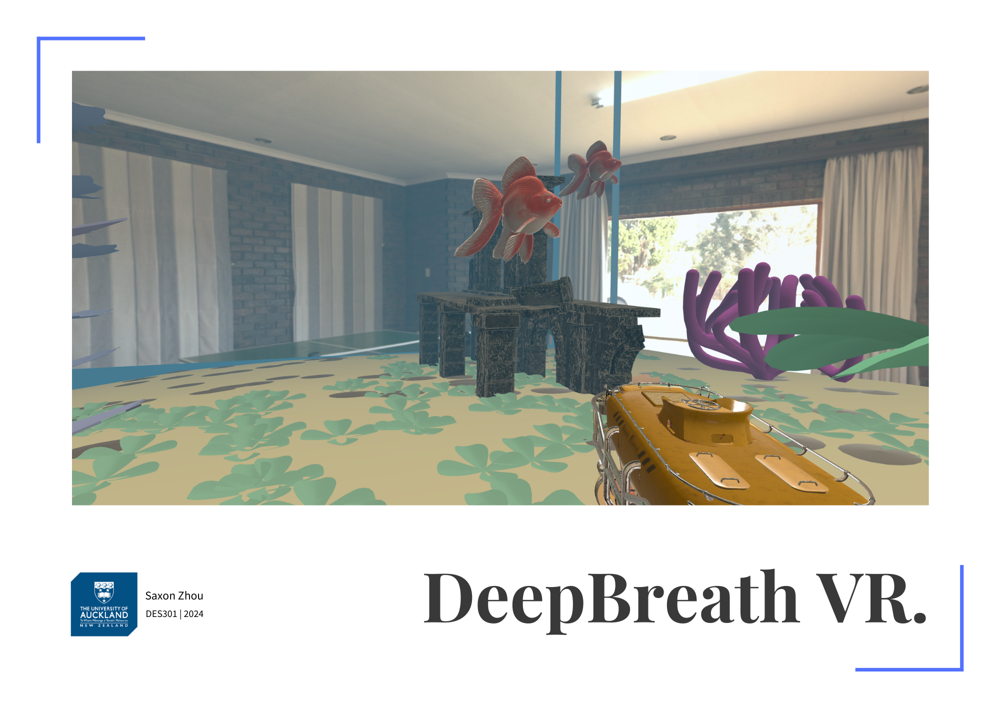
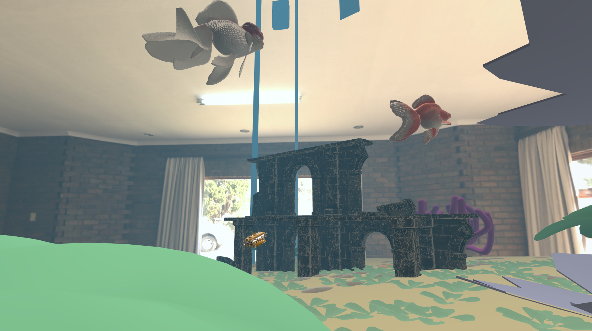
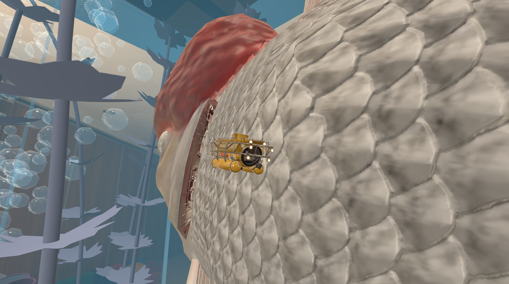
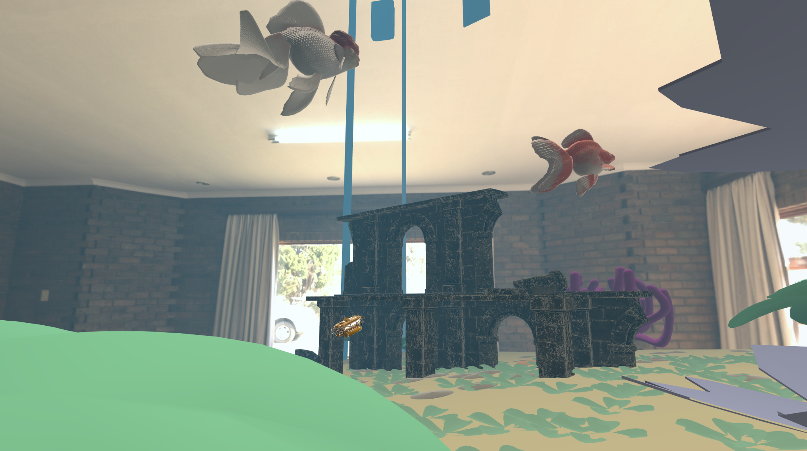
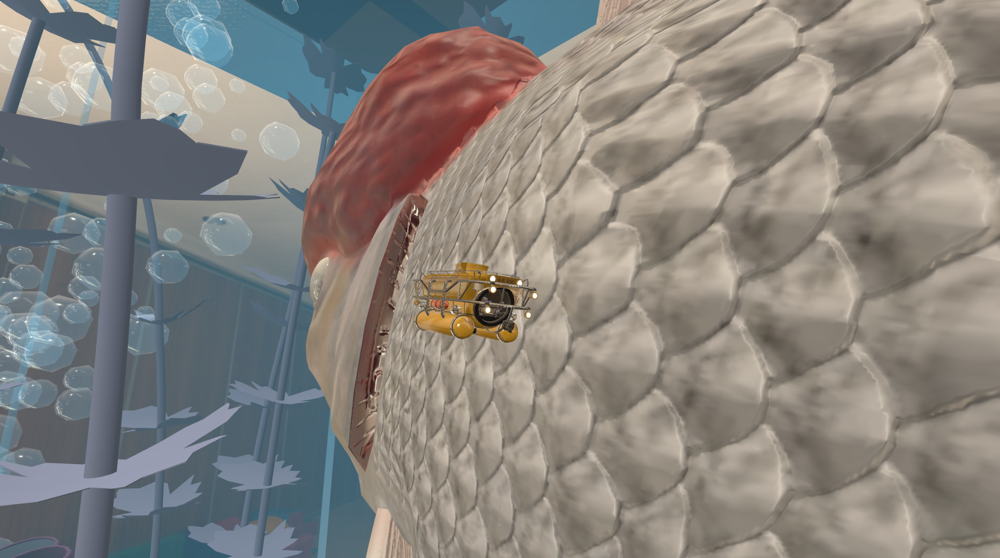

Design Capstone
Brief
This project addresses the challenge of using emerging technologies to support mental health, specifically focusing on raising awareness and empathy for individuals with megalophobia (the fear of large objects) through a Virtual Reality (VR) experience. The goal was to design an immersive VR simulation that evokes the emotional responses associated with megalophobia, such as awe, discomfort, and vulnerability, while fostering empathy and understanding among users. By leveraging the concept of the sublime—a mix of awe, pleasure, and fear—the project aimed to create a safe yet impactful experience that helps users better understand the struggles of those living with phobias. The project was developed within a 14-week timeframe, utilizing User-Centred Design (UCD) principles to ensure the final product resonated with users' emotional and psychological needs. The result is a VR environment that simulates the overwhelming sensations of megalophobia, allowing users to experience the condition firsthand in a controlled and meaningful way.
Role and contribution
As the sole designer and developer of this project, I was responsible for every stage of the process, from initial research and ideation to prototyping, testing, and final implementation. My contributions included:
- Conducting extensive research on phobias, VR therapy, and the concept of the sublime.
- Designing and developing the VR environment using Unity and Meta Quest 2.
- Creating user personas, conducting surveys, and gathering feedback to ensure the experience was user-centered.
- Iteratively refining the prototype based on user testing and feedback.
- Ensuring ethical standards were met, particularly regarding user safety and data privacy.
Process and Methodology
The project followed the User-Centred Design (UCD) framework, which consists of five key phases: Empathize, Define, Ideate, Prototype, and Test.
- Empathize:
- Conducted background research on phobias, mental health in New Zealand, and existing VR applications. Developed user personas to represent individuals with megalophobia and the general public. Gathered insights through surveys and interviews to understand user needs and emotional triggers.
- Define:
- gaps in existing VR solutions through a gap analysis. Crafted problem statements to guide the design process, focusing on creating an immersive and emotionally resonant experience.
- Ideate:
- Brainstormed ideas with individuals who experience megalophobia to identify key environmental triggers. Created concept sketches and developed a branding strategy, including logo design.
- Prototype:
- Built low-fidelity prototypes to test core functionalities and environmental design. Iteratively refined the VR environment based on user feedback, focusing on object scaling, spatial layout, and emotional impact.
- Test:
- Conducted usability testing with individuals who experience megalophobia to validate the effectiveness of the prototype. Gathered feedback on emotional responses, usability, and overall experience.
Challenges and Solutions
- Technical Constraints:
- Adapting to rapid updates in the Unity platform and relearning VR development tools slowed progress.
Solution: Dedicated time to familiarize myself with the updated tools and workflows, ensuring compatibility with Meta Quest 2. - Time Limitations:
- The 14-week timeframe restricted the scope of the project.
Solution: Prioritized core features and focused on creating a functional prototype rather than a fully developed application. - Ethical Concerns:
- Replicating the intense emotions of megalophobia raised ethical concerns about user discomfort.
Solution: Designed the experience to evoke a sense of awe and discomfort without causing extreme distress, ensuring it remained safe and enjoyable for users. - User Feedback Limitations:
- Ethical restrictions limited feedback to classmates,
who may not fully represent the target audience.
Solution: Supplemented feedback with insights from individuals who experience megalophobia to ensure the design accurately reflected their experiences.
Results and Impact
The final prototype successfully simulates the overwhelming sensations associated with megalophobia, using exaggerated proportions of ordinary objects to evoke feelings of anxiety and vulnerability. Key outcomes include:
- User Feedback: Participants reported feeling anxious and overwhelmed when interacting with the scaled-up environment, particularly when large objects (e.g., fish) moved close to them.
- Emotional Impact: The experience effectively combined awe and discomfort, aligning with the concept of the sublime.
- Empathy Building: Users expressed a deeper understanding of the challenges faced by individuals with megalophobia.
While the prototype achieved its primary objectives, future improvements could include:
- Adding ambient sounds and visual effects (e.g., bubbles, water color changes) to enhance immersion.
- Refining submarine controls for a more natural and comfortable user experience.
- Expanding testing to a broader audience to gather more diverse feedback.
Reflection
This project has been a transformative experience, both professionally and personally.
As a designer, I learned the importance of grounding my work in user-centred principles,
ensuring that every decision was informed by user needs and feedback.
The iterative nature of the UCD process taught me the value of adaptability and flexibility,
as the final prototype evolved significantly from the initial concept.
On a personal level,
this project deepened my appreciation for the challenges faced by individuals with
phobias and reinforced the importance of creating inclusive and empathetic designs.
Moving forward, I plan to explore similar projects for other phobias
and continue refining my skills in VR development and user-centred design.
Project link can be found here: https://redesign.ac.nz/projects/deepbreath-vr
 



Contact
Get in touch with me at: saxonz17323@gmail.com